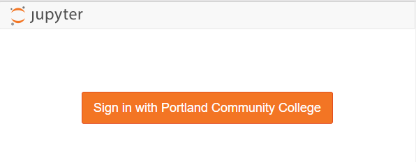

Google Authentication
Now that the GitHub authenticator works, we are going to get into the weeds of getting the Google authenticator to work.
Why Google authenticator instead of GitHub? Our college uses the gmail suite for both staff and students. When students log onto their college email, they are logging into gmail. Students can use Google calendar and Google drive with their college email account as well. So it is probably best that students log into JuypterHub using the same Google login that they use to access their college email, Google drive and calendar.
Google OAuth Instance
To allow students to use Google usernames and passwords to log into JupyterHub, the first thing we need to do is set up a Google OAuth instance. I set up Google OAuth instance using my personal gmail account, rather than my college gmail account. Some parts of Google suite are not available in my college profile, like YouTube and developer tabs.
To obtain the Google OAuth credentials, we need to log into the Google API console https://console.developers.google.com/ and select [Credentials] on the lefthand menu.

Next we'll create a new OAuth credential under [Credentials] --> [Create Credentials] --> [OAuth client ID]:
To create a set of Google OAuth credentials we need to input:
- Authorized JavaScript origins:
https://mydomain.org - Authorized redirect URIs:
https://mydomain.org/hub/oauth_callback

After creating a new set of Google OAuth credentials, note the:
- client ID
- client secret

The client ID and client secret strings will be included in our revised JupyterHub configuration.
Modify jupyterhub_config.py
Once we get our Google OAuth credentials, we need to edit jupyterhub_conf.py again. Note your Google OAuth credentials need to replace 'XXXXXXXXXXXXXXXXX'.
# /etc/jupyterhub/jupyterhub_conf.py
# For Google OAuth
from oauthenticator.google import LocalGoogleOAuthenticator
c.JupyterHub.authenticator_class = LocalGoogleOAuthenticator
# Set up config
c = get_config()
c.JupyterHub.log_level = 10
c.Spawner.cmd = '/opt/miniconda3/envs/jupyterhubenv/bin/jupyterhub-singleuser'
# Cookie Secret and Proxy Auth Token Files
c.JupyterHub.cookie_secret_file = '/srv/jupyterhub/jupyterhub_cookie_secret'
c.ConfigurableHTTPProxy.auth_token = '/srv/jupyterhub/proxy_auth_token'
# Google OAuth Login - Seems to work 2018-11-01
c.LocalGoogleOAuthenticator.oauth_callback_url = 'https://mydomain.org/hub/oauth_callback'
c.LocalGoogleOAuthenticator.client_id = 'XXXXXXXXXXXXXXXXXXXXXXXXXXXXXXXXXXXXXXXXXXXXXXXXXXXXX'
c.LocalGoogleOAuthenticator.client_secret = 'XXXXXXXXXXXXXXXXXXXXXXXXXXXXXXXXXXXX'
c.LocalGoogleOAuthenticator.create_system_users = True
c.Authenticator.add_user_cmd = ['adduser', '-q', '--gecos', '""', '--disabled-password', '--force-badname']
c.LocalGoogleOAuthenticator.hosted_domain = 'college.edu'
c.LocalGoogleOAuthenticator.login_service = 'College Name'
This little line:
c.Authenticator.add_user_cmd = ['adduser', '-q', '--gecos', '""', '--disabled-password', '--force-badname']
was a real gottacha. Our college email addresses are in the form:
firstname.lastname@college.edu
When a student logs in, JupyterHub tries to create a new Linux user with a dot . in their username. Usernames with . doesn't work on Linux. I tried to create a new Linux user with a dot in their username, and the terminal asked me to use the --force-badname flag. So --force-badname is what we'll add to the c.Authenticator.add_user_cmd list. Otherwise, users (students) will be able to authenticate with Google, but they won't get a new user account on the server, and they won't be able to run notebooks or Python code.
Restart JupyterHub and Login
Restart JupyterHub and browse to the web address attached to the server.
$ sudo systemctl stop jupyterhub
$ sudo systemctl start jupyterhub
$ sudo systemctl status jupyterhub
# [Ctrl + c] to exit
The login window should now look something like:

We can log in with our Google user name and password (college username and password).
Pretty sweet!
After we log in using our college username and password, we can see if JupyterHub created a new user (with our college username) on the server. The command below produces a long list of users. This long list contains the non-root sudo user peter and the Google authenticated user (college username).
$ awk -F':' '{ print $1}' /etc/passwd
....
uuidd
dnsmasq
landscape
sshd
pollinate
peter
peter.lastname
githubusername